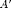

Linear Algebra
Contents
Eigenvalues and Eigenvectors
Eigenvalues and eigenvectors are characteristic components of square matrices. V is the matrix of eigenvalues and D is the matrix of eigenvectors.
[V, D] = eig([1 3; 2 4])
V =
-0.909376709132124 -0.565767464968992
0.415973557919284 -0.824564840132394
D =
-0.372281323269014 0
0 5.37228132326901
Singular Value Decomposition (SVD)
SVD is considered to be a factorization of a matrix. It results in three components, which can be multiplied together to reform the matrix. Produces two unitary matrices, U and V the same size as the input matrix. S Is a diagonal matrix, with the values in decreasing order. U*S*V' will result in the original matrix.
[U, S, V] = svd(rand(3))
U =
-0.567225278101591 0.471929553084925 -0.674935538260978
-0.494368575054479 -0.850567577230537 -0.179261006810679
-0.658676852395145 0.231985545862749 0.71577057122348
S =
1.94503964190219 0 0
0 0.350940402086211 0
0 0 0.0822046785160976
V =
-0.727896180701109 -0.364574311733166 -0.580734639353489
-0.214239717546836 -0.68361525131189 0.697690140104641
-0.651358959058821 0.632262413399744 0.419494632928408
Transposition
Transposition is to switch the rows and columns of a matrix. It is easily done in MATLAB® using the apostrophe immediately following a matrix: 
TranEx = [0 100; 4 17] TranRes = TranEx'
TranEx =
0 100
4 17
TranRes =
0 4
100 17
Identity Matrix
A square matrix with a diagonal composed entirely of ones, and all other entries are zeros. The identity matrix will be the result of multiplying a matrix by its inverse. Another feature of the identity matrix is that it will not alter any matrix multiplied by it. In MATLAB®, the function eye(n) creates an identity matrix, where n is the number of rows and columns.
eye(3) EyeEx = [1 2; 3 4] * eye(2)
ans =
1 0 0
0 1 0
0 0 1
EyeEx =
1 2
3 4
Matrix Inverse
A matrix inverse operates in such a way that the inverse of a matrix multiplied by the original matrix results in the identity matrix: . The original matrix must be square and its determinant must be non-zero: does not equal 0 for a 2x2 matrix.
Orig = [1 2; 3 4] Inverted = Orig^-1 I = round(Orig * Inverted)
Orig =
1 2
3 4
Inverted =
-2 1
1.5 -0.5
I =
1 0
0 1
Dot Product
A dot product of two equally-sized vectors yields a scalar. The dot product is taken by multiplying elements of a vector or matrix component-wise.
dotProd = dot([1 2 3],[4 5 6])
dotProd =
32
Orthogonality
The property of two vectors being perpendicular to eachother. This can be determined by the length of A multiplied by the length of B, times the cosine of the angle between the two vectors. The length of a vector is the square root of the sum of all of its components squared. Orthogonality occurs when the vectors are perpendicular, requiring that the angle between the two is ninety degrees, which, when plugged into cosine results in zero. This is equivalent to stating that the dot product of two vectors is equal to zero. Should the angle need to be calculated, use arccosine to find it, knowing the lengths and vectors. Orthonormality is the case when vectors are orthogonal and have lengths of one. An orthonormal length calculation and orthogonality test is demonstrated below.
vecA = [1 0]; vecB = [0 1]; LengthA = sqrt([1^2 + 0^2]) LengthB = sqrt([0^2 + 1^2]) zero = LengthA * LengthB * cosd(90)
LengthA =
1
LengthB =
1
zero =
0
Basis
A basis is a set of linearly independent vectors in a vector space of n dimensions. Given a vector space, any element in it can be reached via a unique combination the vectors in the basis. As an example, is the vector, while through are the bases:
X = [5; 12; 13]; a1 = [1; 0; 0]; a2 = [0; 1; 0]; a3 = [0; 0; 1]; XDemo = 5*a1 + 12*a2 + 13*a3
XDemo =
5
12
13
Symmetric Matrix
Symmetric matrices remain unchanged when they are transposed. A symbolic example is . Below, it should be clear that the two matrices are symmetric.
SymMat = [1 0 1; 0 1 0; 1 0 1] SymMatTrans = SymMat'
SymMat =
1 0 1
0 1 0
1 0 1
SymMatTrans =
1 0 1
0 1 0
1 0 1
Idempotent Matrix
A matrix which remains unchanged if multiplied by itself. A symbolic example is  . An example of a 2x2 idempotent matrix is below.
. An example of a 2x2 idempotent matrix is below.
IdempMat = [1, 1; 0, 0] IdempMatSq = IdempMat^2
IdempMat =
1 1
0 0
IdempMatSq =
1 1
0 0
Rank of a Matrix
Rank indicates the number of independent variables (columns or rows) in a matrix. Can be found using row-reduced echelon form and identifying the pivots (number of rows with leading ones).
rrefEx = rref([1 2 3; 4 5 6; 7 8 9]) rankEx = rank([1 2 3; 4 5 6; 7 8 9])
rrefEx =
1 0 -1
0 1 2
0 0 0
rankEx =
2
Linear Combination
Any combination of scalars and vectors or their sums. Linear dependence is identified through linear combinations, with linearly independent vectors being unable to be defined by any combination of vectors in a space.
Cross Product
A cross product of two vectors yields a third vector perpendicular (normal) to both original vectors.
crossProd = cross([1 2 3],[4 5 6])
crossProd =
-3 6 -3
Scalar Projection
This is used to find the length of a vector's "shadow" along the axis it is projecting on. Generally, the method is to mutliply the length of the vector by the cosine of the angle between it and the axis to get the length of the projection along the axis.
Positive-definite Matrix
Positive definite matrices are described by the process , resulting in a matrix with no negative entries nor zeros as entries for any . This is another way of saying that the eigendecomposition of the matrix results in only positive eigenvalues. Positive-semidefinite matrices are determined in the same way, but they may contain zeros as entries.